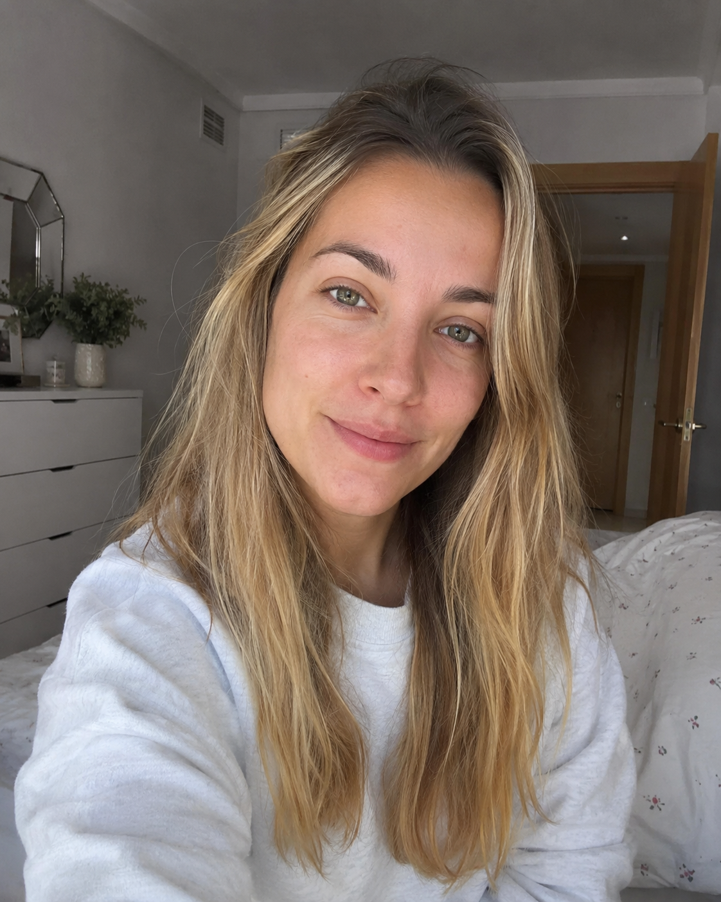
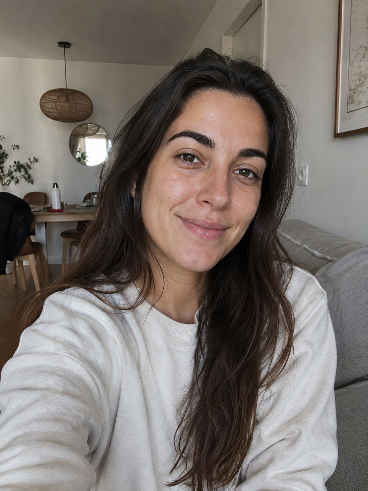

A partir de tus fotos normales, creamos imágenes elegantes y especiales con inteligencia artificial.
Atención personalizada y rápida por WhatsApp

Tus fotos cotidianas pueden convertirse en recuerdos únicos y especiales.

Nos mandas tus fotos directamente por WhatsApp.
Nos cuentas cómo quieres tu sesión de cumpleaños.
Te entregamos tus fotos finales en formato digital.
Todo el proceso es online. Creamos tu sesión respetando tus rasgos, tu estilo y tu personalidad, para que sigas pareciendo tú.
Escríbenos por WhatsApp y te contamos cómo funciona.
Proceso fácil, rápido y 100% online.